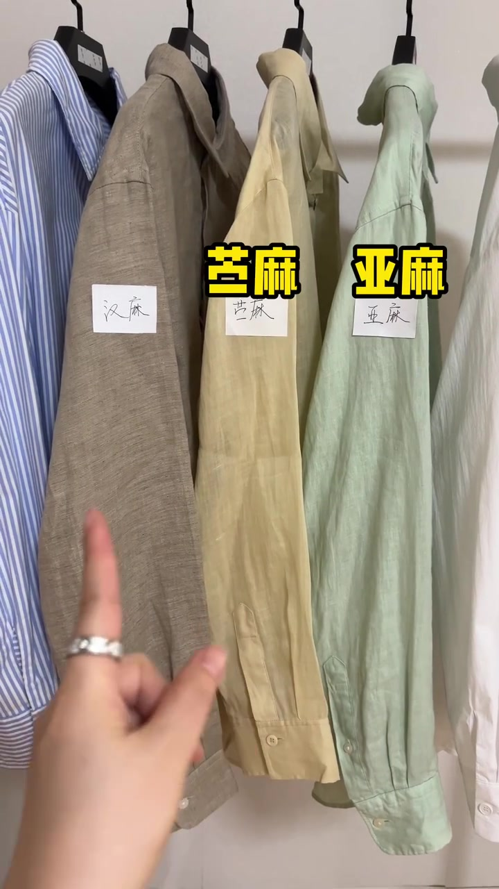
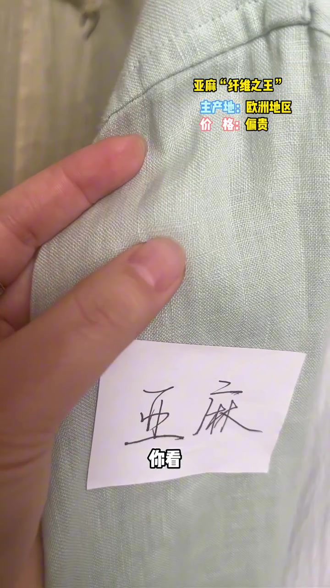
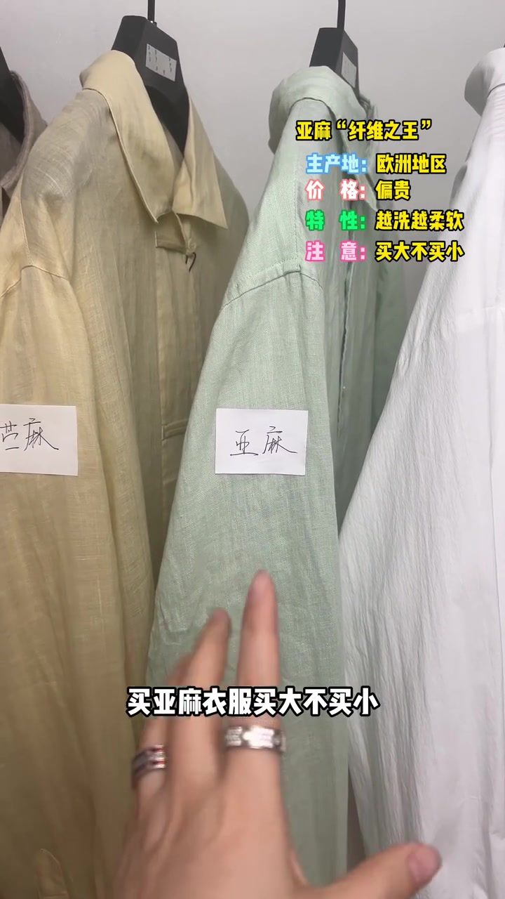
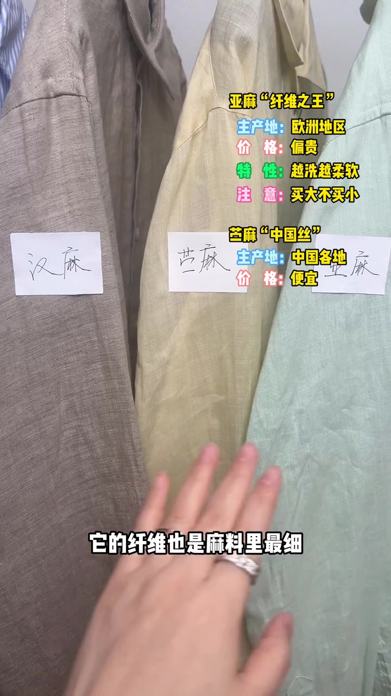
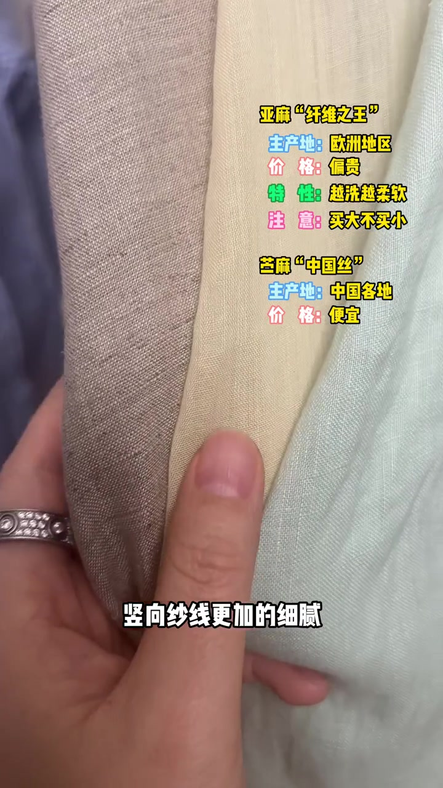
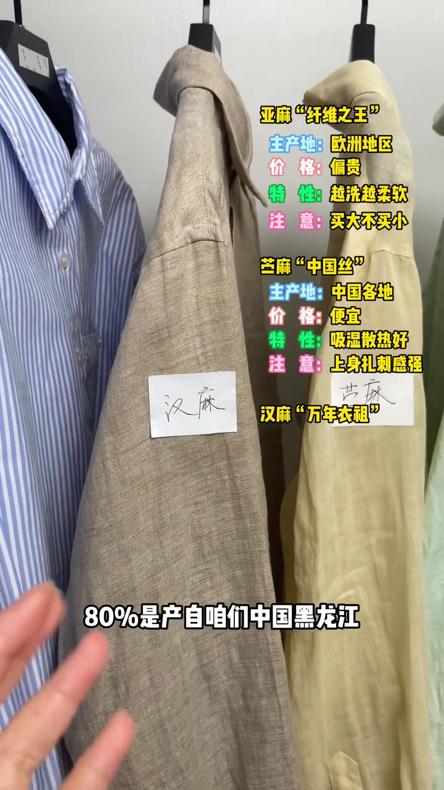
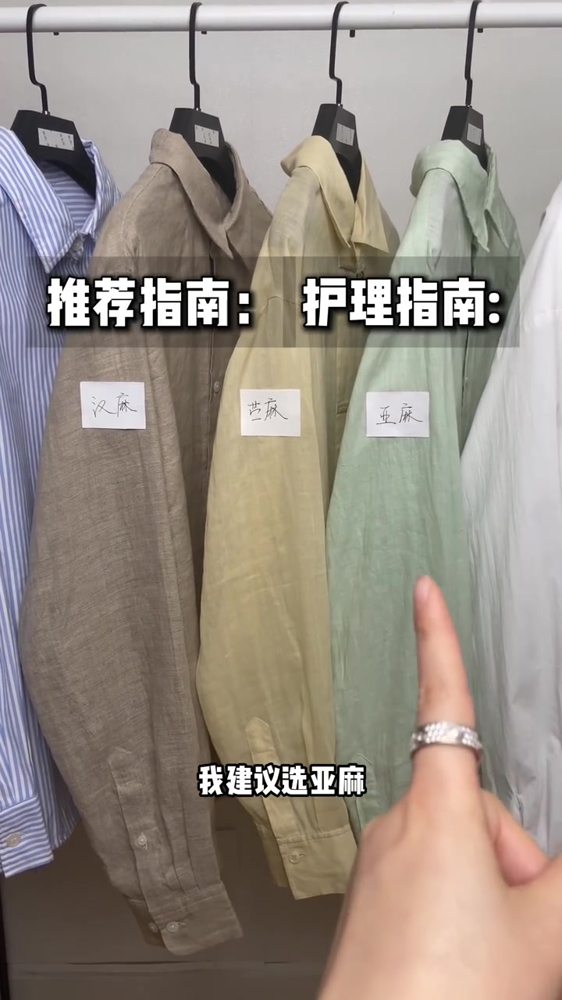
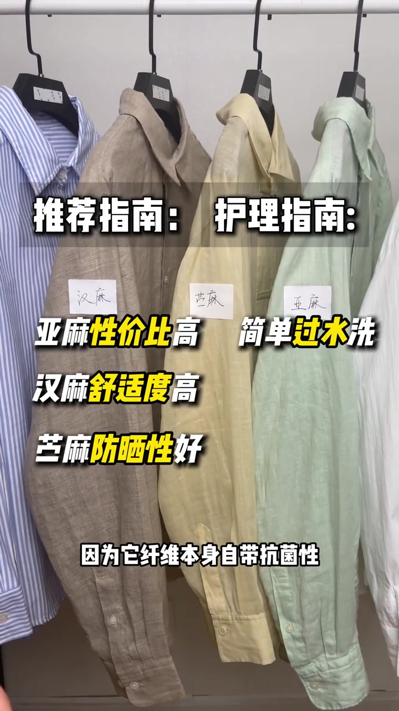

开场：货架上先认清三种麻
镜头落到一排长袖衬衫上。作者用手指点过贴着白纸标签的三件样品——汉麻、苎麻、亚麻——字幕直接抛出整条片子的问题：三者有什么区别、怎么选、怎么养护。
可见字幕校正：Whisper 把「亚麻 / 苎麻 / 汉麻」系统误识为「亚马 / 驻马 / 汉马」；叙述按画面字幕与贴纸校正，文末转录区仍保留原始分段。

先说亚麻：进口贵、竹节感、缩水最高
字幕把亚麻称作「纤维之王」。作者说明约 85% 产自法国、比利时、荷兰等地，主要依赖进口，所以价格偏高。特写里，薄荷绿衬衫布面有明显竹节纹理；手捏布面时，字幕同步给出产地「欧洲地区」与价格「偏贵」。
「第一次穿会觉得稍微有一点硬挺，敏感肌可能会有轻微的扎刺感，但是这种面料会越洗越柔软。」

接着是整条片子最硬的购买提醒：亚麻缩水率在麻类里最高，因此「买大不买小」；或者直接选做过洗水工艺的款，后续就不容易再大幅缩水。市面上常见雨露麻与普通麻，雨露麻更贵一些。

这一段里作者还点到「雨露麻」——Whisper 写成「雨露马」——属于亚麻品类里更贵的常见说法，不是第四种麻。
再说苎麻：国产便宜，细长却最扎
镜头切到「苎麻『中国丝』」信息卡。作者说苎麻主要产自中国，产量大、加工容易，所以是麻料里最便宜的；纤维也是麻料里最细最长的。三件衬衫并排时，她强调苎麻纱线在横竖方向都更细腻、更轻薄。


优点随之而来：吸湿散热在麻里最好，缩水率也最低。但作者立刻纠偏——别以为纤维细长就软和；相反，苎麻纤维最硬挺，上身扎刺感也最强。画面「注意」栏写着「上身扎刺感强」。
汉麻：产量少、最贵，但最舒服
作者转向贴「汉麻」标签的卡其色衬衫。字幕称汉麻为「万年衣祖」：约 80% 产自中国黑龙江，但产量少、加工难，所以价格在麻料里最高。她解释单纤维短、头部偏钝圆，因此上身舒适度最高，抗菌性也最好；缩水率介于亚麻与苎麻之间。

推荐指南：第一次先试亚麻
进入「推荐指南 / 护理指南」双栏。作者给新手的第一选择是亚麻——性价比最高：比苎麻舒服，比汉麻便宜。若更重视舒适度或本身是敏感肌，首选汉麻；若更重视透气与防晒，可选苎麻。画面中三条黄字关键词同步出现：亚麻性价比高、汉麻舒适度高、苎麻防晒性好。

这里是作者个人立场，不是实验室结论；适用前提是「第一次尝试麻料」的普通购买场景。
护理指南：过水、阴干、卷起来
收尾是养护小常识：麻料洗衣时简单过下水即可，因为纤维本身自带抗菌性；洗完放通风处阴干，别暴晒；存放一定要卷起来，避免产生死褶。

整条片子以货架实拍 + 字幕信息卡推进，没有实验室数据或第三方检测；价格与产地比例均来自作者口述与画面标注。